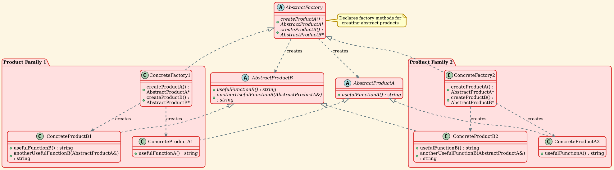

Abstract Factory Pattern
Overview
Abstract Factory is a creational design pattern that lets you produce families of related objects without specifying their concrete classes. It provides an interface for creating families of related or dependent objects without specifying their concrete classes.
Intent
The Abstract Factory pattern provides an interface for creating families of related or dependent objects without specifying their concrete classes. The pattern encapsulates a group of individual factories that have a common theme without specifying their concrete classes.
Problem
Imagine that you're creating a furniture shop simulator. Your code consists of classes that represent:
- A family of related products, say:
Chair + Sofa + CoffeeTable.
- Several variants of this family. For example, products
Chair + Sofa + CoffeeTable are available in these variants: Modern, Victorian, ArtDeco.
You need a way to create individual furniture objects so that they match other objects of the same family. Customers get quite mad when they receive non-matching furniture.
Also, you don't want to change existing code when adding new products or families of products to the program. Furniture vendors update their catalogs very often, and you wouldn't want to change the core code each time it happens.
Solution
The Abstract Factory pattern suggests explicitly declaring interfaces for each distinct product of the product family (e.g., chair, sofa or coffee table). Then you can make all variants of products follow those interfaces. For example, all chair variants can implement the Chair interface; all coffee table variants can implement the CoffeeTable interface, and so on.
The next move is to declare the Abstract Factory—an interface with a list of creation methods for all products that are part of the product family (for example, createChair, createSofa and createCoffeeTable). These methods must return abstract product types represented by the interfaces we extracted previously: Chair, Sofa, CoffeeTable and so on.
Structure
UML Diagram

Participants
-
AbstractFactory (AbstractFactory)
- Declares an interface for operations that create abstract product objects
- Contains a method for creating each type of product
-
ConcreteFactory (ConcreteFactory1, ConcreteFactory2)
- Implements the operations to create concrete product objects
- Each concrete factory corresponds to a specific variant of products and creates only those product variants
-
AbstractProduct (AbstractProductA, AbstractProductB)
- Declares an interface for a type of product object
- Defines the operations that concrete products must implement
-
ConcreteProduct (ConcreteProductA1, ConcreteProductA2, ConcreteProductB1, ConcreteProductB2)
- Defines a product object to be created by the corresponding concrete factory
- Implements the AbstractProduct interface
- Products from the same variant are designed to work together
-
Client
- Uses only interfaces declared by AbstractFactory and AbstractProduct classes
- Works with any concrete factory/product variant through the abstract interfaces
Implementation
Abstract Product Interfaces
The product interfaces declare operations for all concrete products. Products from the same family should be compatible with each other.
| // Product.h
#ifndef PRODUCT_H
#define PRODUCT_H
#include <string>
/**
* @brief Each distinct product of a product family should have a base interface.
*
* All variants of the product must implement this interface.
* This is AbstractProductA.
*/
class AbstractProductA {
public:
virtual ~AbstractProductA() = default;
virtual std::string usefulFunctionA() const = 0;
};
/**
* @brief Concrete Products are created by corresponding Concrete Factories.
*
* These are variants of ProductA.
*/
class ConcreteProductA1 : public AbstractProductA {
public:
std::string usefulFunctionA() const override {
return "The result of the product A1.";
}
};
class ConcreteProductA2 : public AbstractProductA {
public:
std::string usefulFunctionA() const override {
return "The result of the product A2.";
}
};
/**
* @brief Here's the base interface of another product.
*
* All products can interact with each other, but proper interaction is possible
* only between products of the same concrete variant.
* This is AbstractProductB.
*/
class AbstractProductB {
public:
virtual ~AbstractProductB() = default;
/**
* @brief Product B is able to do its own thing...
*/
virtual std::string usefulFunctionB() const = 0;
/**
* @brief ...but it also can collaborate with ProductA.
*
* The Abstract Factory makes sure that all products it creates are of
* the same variant and thus, compatible.
*/
virtual std::string anotherUsefulFunctionB(const AbstractProductA& collaborator) const = 0;
};
/**
* @brief Concrete Products are created by corresponding Concrete Factories.
*
* These are variants of ProductB.
*/
class ConcreteProductB1 : public AbstractProductB {
public:
std::string usefulFunctionB() const override {
return "The result of the product B1.";
}
/**
* @brief The variant, Product B1, is only able to work correctly with the
* variant, Product A1. Nevertheless, it accepts any instance of AbstractProductA
* as an argument.
*/
std::string anotherUsefulFunctionB(const AbstractProductA& collaborator) const override {
const std::string result = collaborator.usefulFunctionA();
return "The result of the B1 collaborating with (" + result + ")";
}
};
class ConcreteProductB2 : public AbstractProductB {
public:
std::string usefulFunctionB() const override {
return "The result of the product B2.";
}
/**
* @brief The variant, Product B2, is only able to work correctly with the
* variant, Product A2. Nevertheless, it accepts any instance of AbstractProductA
* as an argument.
*/
std::string anotherUsefulFunctionB(const AbstractProductA& collaborator) const override {
const std::string result = collaborator.usefulFunctionA();
return "The result of the B2 collaborating with (" + result + ")";
}
};
#endif // PRODUCT_H
|
Abstract Factory Interface
The Abstract Factory interface declares creation methods for each abstract product type.
| // AbstractFactory.h
#ifndef ABSTRACT_FACTORY_H
#define ABSTRACT_FACTORY_H
#include "Product.h"
#include <memory>
/**
* @brief The Abstract Factory interface declares a set of methods for creating
* each of the abstract products.
*
* The Abstract Factory pattern suggests explicitly declaring interfaces for
* each distinct product of the product family. Then you can make all variants
* of products follow those interfaces.
*/
class AbstractFactory {
public:
virtual ~AbstractFactory() = default;
/**
* @brief Factory method to create ProductA variant
*/
virtual std::unique_ptr<AbstractProductA> createProductA() const = 0;
/**
* @brief Factory method to create ProductB variant
*/
virtual std::unique_ptr<AbstractProductB> createProductB() const = 0;
};
/**
* @brief Concrete Factory 1 produces a family of products that belong to variant 1.
*
* The factory guarantees that resulting products are compatible. Note that
* signatures of the Concrete Factory's methods return an abstract product,
* while inside the method a concrete product is instantiated.
*/
class ConcreteFactory1 : public AbstractFactory {
public:
std::unique_ptr<AbstractProductA> createProductA() const override {
return std::make_unique<ConcreteProductA1>();
}
std::unique_ptr<AbstractProductB> createProductB() const override {
return std::make_unique<ConcreteProductB1>();
}
};
/**
* @brief Concrete Factory 2 produces a family of products that belong to variant 2.
*
* Each Concrete Factory has a corresponding product variant.
*/
class ConcreteFactory2 : public AbstractFactory {
public:
std::unique_ptr<AbstractProductA> createProductA() const override {
return std::make_unique<ConcreteProductA2>();
}
std::unique_ptr<AbstractProductB> createProductB() const override {
return std::make_unique<ConcreteProductB2>();
}
};
#endif // ABSTRACT_FACTORY_H
|
Demo Application
The client code works with factories and products only through abstract types.
| // abstract_factory_demo.cpp
#include "AbstractFactory.h"
#include <iostream>
#include <memory>
/**
* @brief The client code works with factories and products only through abstract types.
*
* This lets you pass any factory or product subclass to the client code without
* breaking it. The client doesn't care which concrete factory it works with or
* which concrete products it gets.
*
* @param factory Reference to an AbstractFactory
*/
void clientCode(const AbstractFactory& factory) {
// Create products from the factory
std::unique_ptr<AbstractProductA> productA = factory.createProductA();
std::unique_ptr<AbstractProductB> productB = factory.createProductB();
// Use the products
std::cout << productB->usefulFunctionB() << "\n";
std::cout << productB->anotherUsefulFunctionB(*productA) << "\n";
}
/**
* @brief Main function demonstrating the Abstract Factory pattern.
*
* The Abstract Factory pattern provides an interface for creating families of
* related or dependent objects without specifying their concrete classes.
*
* The pattern involves:
* - Abstract Factory: Declares an interface for operations that create abstract products
* - Concrete Factory: Implements operations to create concrete products
* - Abstract Product: Declares an interface for a type of product
* - Concrete Product: Defines a product to be created by the corresponding concrete factory
* - Client: Uses only interfaces declared by Abstract Factory and Abstract Product classes
*/
int main() {
std::cout << "=== Abstract Factory Pattern Demo ===\n\n";
std::cout << "Client: Testing client code with the first factory type (Factory1):\n";
std::unique_ptr<AbstractFactory> factory1 = std::make_unique<ConcreteFactory1>();
clientCode(*factory1);
std::cout << std::endl;
std::cout << "Client: Testing the same client code with the second factory type (Factory2):\n";
std::unique_ptr<AbstractFactory> factory2 = std::make_unique<ConcreteFactory2>();
clientCode(*factory2);
std::cout << std::endl;
return 0;
}
|
Output:
| === Abstract Factory Pattern Demo ===
Client: Testing client code with the first factory type (Factory1):
The result of the product B1.
The result of the B1 collaborating with (The result of the product A1.)
Client: Testing the same client code with the second factory type (Factory2):
The result of the product B2.
The result of the B2 collaborating with (The result of the product A2.)
|
The output demonstrates that each factory creates a compatible family of products. Factory1 creates ProductA1 and ProductB1 which work together, while Factory2 creates ProductA2 and ProductB2 which also work together.
Key Concepts
Product Families
A product family is a group of distinct but related products. For example:
- Family 1: ChairModern, SofaModern, CoffeeTableModern
- Family 2: ChairVictorian, SofaVictorian, CoffeeTableVictorian
Variant Consistency
The Abstract Factory ensures that products from the same family are compatible:
| // Factory 1 creates only products from family 1
ConcreteFactory1 factory1;
auto productA1 = factory1.createProductA(); // ConcreteProductA1
auto productB1 = factory1.createProductB(); // ConcreteProductB1
// B1 and A1 are designed to work together
// Factory 2 creates only products from family 2
ConcreteFactory2 factory2;
auto productA2 = factory2.createProductA(); // ConcreteProductA2
auto productB2 = factory2.createProductB(); // ConcreteProductB2
// B2 and A2 are designed to work together
|
Abstract Factory vs Factory Method
Abstract Factory:
- Creates families of related objects
- Uses composition: has multiple factory methods
- Object creation through an interface with multiple methods
Factory Method:
- Creates one type of object
- Uses inheritance: subclasses decide which class to instantiate
- Object creation through a single method
Applicability
Use the Abstract Factory pattern when:
1. Product Family Independence
Your code needs to work with various families of related products, but you don't want it to depend on the concrete classes of those products.
Example: A UI toolkit that supports multiple look-and-feel standards (Windows, macOS, Linux). Each standard is a product family.
2. Family Consistency Requirement
You want to provide a library of products and reveal only their interfaces, not their implementations.
Example: A database abstraction layer where you want to ensure all database operations (connection, query, transaction) use the same database type (MySQL, PostgreSQL, SQLite).
3. Multiple Product Variants
A class needs to be configured with one of multiple families of products.
Example: A game that needs to render graphics in different styles (realistic, cartoon, pixel art), where each style has its own set of textures, sprites, and effects.
4. Product Compatibility Enforcement
You want to enforce constraints that products from the same family must be used together.
Example: A furniture shop where chairs, tables, and sofas must be from the same collection to match.
Advantages
1. Product Compatibility Guarantee
✅ Ensures that products from a factory are compatible with each other. The factory encapsulates the responsibility for creating a family of related objects.
2. Single Responsibility Principle
✅ You can extract the product creation code into one place, making the code easier to support and maintain.
3. Open/Closed Principle
✅ You can introduce new variants of products without breaking existing client code. Just add new concrete factories and products.
4. Loose Coupling
✅ The client code is decoupled from concrete product classes. It works through abstract interfaces.
5. Product Family Consistency
✅ Makes it easy to exchange entire product families because all objects created by a concrete factory are guaranteed to be compatible.
Disadvantages
1. Complexity
❌ The code may become more complicated than it should be, since a lot of new interfaces and classes are introduced along with the pattern.
2. Rigid Structure
❌ Adding new products requires extending all factories. If you add a new product type, you need to modify the abstract factory interface and all concrete factories.
3. Factory Proliferation
❌ For each new product family variant, you need to create a new concrete factory class.
Real-World Examples
| // Abstract Products
class Button {
public:
virtual void paint() = 0;
virtual void onClick() = 0;
};
class Checkbox {
public:
virtual void paint() = 0;
virtual void toggle() = 0;
};
// Concrete Products - Windows
class WindowsButton : public Button {
void paint() override { /* Render Windows-style button */ }
void onClick() override { /* Windows click behavior */ }
};
class WindowsCheckbox : public Checkbox {
void paint() override { /* Render Windows-style checkbox */ }
void toggle() override { /* Windows toggle behavior */ }
};
// Concrete Products - macOS
class MacOSButton : public Button {
void paint() override { /* Render macOS-style button */ }
void onClick() override { /* macOS click behavior */ }
};
class MacOSCheckbox : public Checkbox {
void paint() override { /* Render macOS-style checkbox */ }
void toggle() override { /* macOS toggle behavior */ }
};
// Abstract Factory
class GUIFactory {
public:
virtual std::unique_ptr<Button> createButton() = 0;
virtual std::unique_ptr<Checkbox> createCheckbox() = 0;
};
// Concrete Factories
class WindowsFactory : public GUIFactory {
public:
std::unique_ptr<Button> createButton() override {
return std::make_unique<WindowsButton>();
}
std::unique_ptr<Checkbox> createCheckbox() override {
return std::make_unique<WindowsCheckbox>();
}
};
class MacOSFactory : public GUIFactory {
public:
std::unique_ptr<Button> createButton() override {
return std::make_unique<MacOSButton>();
}
std::unique_ptr<Checkbox> createCheckbox() override {
return std::make_unique<MacOSCheckbox>();
}
};
// Client Code
class Application {
private:
std::unique_ptr<GUIFactory> factory;
std::unique_ptr<Button> button;
public:
Application(std::unique_ptr<GUIFactory> f) : factory(std::move(f)) {
button = factory->createButton();
}
void render() {
button->paint();
}
};
|
Example 2: Database Abstraction Layer
| // Abstract Products
class Connection {
public:
virtual void connect(const std::string& connectionString) = 0;
virtual void disconnect() = 0;
};
class Command {
public:
virtual void execute(const std::string& sql) = 0;
virtual int getRowsAffected() = 0;
};
class Transaction {
public:
virtual void begin() = 0;
virtual void commit() = 0;
virtual void rollback() = 0;
};
// Concrete Products - MySQL
class MySQLConnection : public Connection { /* ... */ };
class MySQLCommand : public Command { /* ... */ };
class MySQLTransaction : public Transaction { /* ... */ };
// Concrete Products - PostgreSQL
class PostgreSQLConnection : public Connection { /* ... */ };
class PostgreSQLCommand : public Command { /* ... */ };
class PostgreSQLTransaction : public Transaction { /* ... */ };
// Abstract Factory
class DatabaseFactory {
public:
virtual std::unique_ptr<Connection> createConnection() = 0;
virtual std::unique_ptr<Command> createCommand() = 0;
virtual std::unique_ptr<Transaction> createTransaction() = 0;
};
// Concrete Factories
class MySQLFactory : public DatabaseFactory {
public:
std::unique_ptr<Connection> createConnection() override {
return std::make_unique<MySQLConnection>();
}
std::unique_ptr<Command> createCommand() override {
return std::make_unique<MySQLCommand>();
}
std::unique_ptr<Transaction> createTransaction() override {
return std::make_unique<MySQLTransaction>();
}
};
class PostgreSQLFactory : public DatabaseFactory {
public:
std::unique_ptr<Connection> createConnection() override {
return std::make_unique<PostgreSQLConnection>();
}
std::unique_ptr<Command> createCommand() override {
return std::make_unique<PostgreSQLCommand>();
}
std::unique_ptr<Transaction> createTransaction() override {
return std::make_unique<PostgreSQLTransaction>();
}
};
|
Example 3: Game Theme System
| // Abstract Products
class Enemy {
public:
virtual void spawn() = 0;
virtual void attack() = 0;
};
class Weapon {
public:
virtual void use() = 0;
virtual int getDamage() = 0;
};
class Environment {
public:
virtual void render() = 0;
virtual std::string getTheme() = 0;
};
// Concrete Products - Medieval Theme
class MedievalEnemy : public Enemy { /* Knights, Dragons */ };
class MedievalWeapon : public Weapon { /* Swords, Bows */ };
class MedievalEnvironment : public Environment { /* Castles, Forests */ };
// Concrete Products - Sci-Fi Theme
class SciFiEnemy : public Enemy { /* Aliens, Robots */ };
class SciFiWeapon : public Weapon { /* Laser Guns, Plasma Rifles */ };
class SciFiEnvironment : public Environment { /* Space Stations, Planets */ };
// Abstract Factory
class GameThemeFactory {
public:
virtual std::unique_ptr<Enemy> createEnemy() = 0;
virtual std::unique_ptr<Weapon> createWeapon() = 0;
virtual std::unique_ptr<Environment> createEnvironment() = 0;
};
// Concrete Factories
class MedievalThemeFactory : public GameThemeFactory {
public:
std::unique_ptr<Enemy> createEnemy() override {
return std::make_unique<MedievalEnemy>();
}
std::unique_ptr<Weapon> createWeapon() override {
return std::make_unique<MedievalWeapon>();
}
std::unique_ptr<Environment> createEnvironment() override {
return std::make_unique<MedievalEnvironment>();
}
};
class SciFiThemeFactory : public GameThemeFactory {
public:
std::unique_ptr<Enemy> createEnemy() override {
return std::make_unique<SciFiEnemy>();
}
std::unique_ptr<Weapon> createWeapon() override {
return std::make_unique<SciFiWeapon>();
}
std::unique_ptr<Environment> createEnvironment() override {
return std::make_unique<SciFiEnvironment>();
}
};
|
Factory Method
Relationship: Abstract Factory is often implemented using Factory Methods. Each create method in the Abstract Factory is a Factory Method.
Difference: Factory Method creates one product, while Abstract Factory creates families of related products.
Builder
Relationship: Both are creational patterns that construct complex objects.
Difference: Builder focuses on constructing a complex object step by step, while Abstract Factory emphasizes creating families of related objects.
Prototype
Relationship: Abstract Factory can be implemented using Prototype to create product instances.
Difference: Prototype creates objects by cloning, while Abstract Factory creates objects through factory methods.
Singleton
Relationship: Concrete Factories are often implemented as Singletons, as usually only one instance of a concrete factory is needed.
Bridge
Relationship: Abstract Factory can be combined with Bridge. Bridge can use Abstract Factory to create and encapsulate platform-specific implementations.
Common Mistakes
1. Not Ensuring Product Compatibility
❌ Wrong: Allowing products from different families to be mixed.
| // BAD: Creating incompatible products
auto productA = factory1->createProductA(); // From family 1
auto productB = factory2->createProductB(); // From family 2
productB->collaborate(*productA); // May not work correctly!
|
✅ Right: Use one factory per client to ensure compatibility.
| // GOOD: All products from the same factory
auto productA = factory1->createProductA();
auto productB = factory1->createProductB();
productB->collaborate(*productA); // Guaranteed to work!
|
2. Adding Products Without Extending All Factories
❌ Wrong: Adding a new product type but forgetting to update all concrete factories.
✅ Right: When adding a new product type, update the abstract factory interface and implement it in all concrete factories.
3. Using for Simple Object Creation
❌ Wrong: Using Abstract Factory when you only have one product type or no product families.
✅ Right: Use Factory Method for single products, or simple constructors for trivial cases.
4. Tight Coupling in Client Code
❌ Wrong: Client code depends on concrete factories or products.
| // BAD: Client knows about concrete classes
ConcreteFactory1 factory; // Concrete type
auto product = factory.createProductA();
|
✅ Right: Client works through abstract interfaces only.
| // GOOD: Client uses abstract types
std::unique_ptr<AbstractFactory> factory = getFactory(); // Abstract type
auto product = factory->createProductA();
|
Best Practices
1. Return Smart Pointers
| // Use unique_ptr to express ownership transfer
virtual std::unique_ptr<AbstractProduct> createProduct() const = 0;
|
2. Use Const Methods
| // Factory methods typically don't modify factory state
virtual std::unique_ptr<AbstractProduct> createProduct() const = 0;
|
3. Consider Factory Registration
For extensibility, consider using a factory registry:
| class FactoryRegistry {
private:
std::map<std::string, std::unique_ptr<AbstractFactory>> factories;
public:
void registerFactory(const std::string& name, std::unique_ptr<AbstractFactory> factory) {
factories[name] = std::move(factory);
}
AbstractFactory* getFactory(const std::string& name) {
return factories[name].get();
}
};
|
4. Document Product Compatibility
Always document which products are designed to work together:
| /**
* @brief ConcreteFactory1 creates products from family 1.
*
* Products created by this factory (ConcreteProductA1, ConcreteProductB1)
* are guaranteed to be compatible with each other.
*/
class ConcreteFactory1 : public AbstractFactory { /* ... */ };
|
5. Consider Configuration-Based Factory Selection
| std::unique_ptr<AbstractFactory> createFactory(const std::string& config) {
if (config == "windows") {
return std::make_unique<WindowsFactory>();
} else if (config == "macos") {
return std::make_unique<MacOSFactory>();
}
return std::make_unique<DefaultFactory>();
}
|
Implementation Variations
1. Factory with Parameters
Sometimes factories need parameters to create products:
| class ParameterizedFactory : public AbstractFactory {
public:
std::unique_ptr<AbstractProduct> createProduct(const Config& config) const override {
if (config.type == "premium") {
return std::make_unique<PremiumProduct>();
}
return std::make_unique<StandardProduct>();
}
};
|
2. Factory with Initialization
Factories can initialize products after creation:
| class InitializingFactory : public AbstractFactory {
public:
std::unique_ptr<AbstractProduct> createProduct() const override {
auto product = std::make_unique<ConcreteProduct>();
product->initialize(); // Post-creation initialization
return product;
}
};
|
3. Singleton Factories
Concrete factories are often singletons:
| class ConcreteFactory1 : public AbstractFactory {
private:
ConcreteFactory1() = default;
public:
static ConcreteFactory1& getInstance() {
static ConcreteFactory1 instance;
return instance;
}
ConcreteFactory1(const ConcreteFactory1&) = delete;
ConcreteFactory1& operator=(const ConcreteFactory1&) = delete;
// Factory methods...
};
|
Summary
The Abstract Factory pattern is a powerful creational design pattern that:
- ✅ Provides an interface for creating families of related or dependent objects
- ✅ Ensures product compatibility within families
- ✅ Promotes loose coupling between client code and product implementations
- ✅ Follows the Open/Closed Principle for adding new product families
- ✅ Encapsulates the responsibility for creating related objects
- ✅ Makes it easy to exchange entire product families
Use it when you need to create families of related objects and want to ensure they are used together consistently, but be aware of the increased complexity it introduces.
Comparison: Abstract Factory vs Factory Method
| Aspect |
Abstract Factory |
Factory Method |
| Purpose |
Create families of related objects |
Create a single product |
| Structure |
Interface with multiple factory methods |
Single factory method |
| Complexity |
More complex, more classes |
Simpler, fewer classes |
| Flexibility |
Can create multiple product types |
Creates one product type |
| Usage |
When products must be used together |
When you need one product variant |
| Implementation |
Often uses Factory Method internally |
Standalone pattern |
| Variants |
Product families (themes, platforms) |
Product types (documents, shapes) |